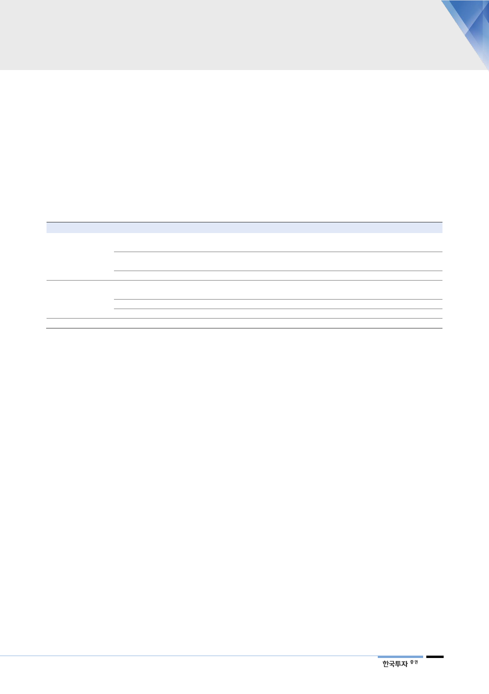

원전 축소에 대한
신중론 제기
이는 마땅한 대안이 없는 상황에서 경제성 높은 원전을 줄이는 것은 전기요금 인
상과 화석연료 의존도 확대로 이어지기 때문이다. 탈원전을 내세웠던 국가들도
장기적인 에너지 전환과 온실가스 감축을 위한 중간 단계로서 원전을 배제하기
어려움을 인정한 것이다. 2015년 12월 파리기후협약 체결 이후 기후변화에 대한
경각심이 커지면서 탈탄소화의 필요성이 원전에 대한 위험성보다 커지고 있다.
또한 원자력 발전은 에너지 안보 차원에서도 자원 수입 의존도를 낮출 수 있어
중요하다. 원전이 다시 늘어나길 기대하기는 어렵더라도, 단계적인 폐로 속도에
대해 사회적 합의를 이루기까지 예상보다 긴 시간이 걸리고 있다.
<표 8> 국가별 원전 축소 정책에 변화 움직임 관측
구분
국가
탈원전 정책
원전축소 계획 선회
일본
프랑스
2011년 후쿠시마 원전사고를 계기로 모든 원전에 대해 안전검사 및 기준을 강화. 하지만 화석연료 의존도가 높아
지고 전기요금 인상 부담이 커지면서 원자력발전을 재개하는 방향으로 선회
현재 75%에 달하는 원자력 발전비중을 2025년까지 50%로 낮출 계획이었으나, 탄소 배출을 줄이기 위해
원전 축소 속도를 늦추고 목표 달성시점을 5~10년 지연시킬 예정
탈원전 유지
탈원전 강화
대만
독일
스위스
벨기에
한국
당초 6기의 원전을 2025년까지 가동 중단할 계획이었으나, 국민투표에서 탈원전 정책을 폐지하기로 결정
현재 가동중인 7기의 원전을 2022년까지 단계적으로 운영 중단할 방침이나, 신재생에너지 지원금 부담
커지는 한편 2020년 이산화탄소 배출량 40% 저감 목표에도 적신호
현재 가동중인 5기의 원전을 2050년까지 단계적으로 운영 중단할 방침
현재 가동중인 7기의 원전을 2025년까지 단계적으로 운영 중단할 방침
현재 가동중인 23기의 원전을 2060년까지 단계적으로 운영 중단할 방침
자료: 산업자료, 한국원자력산업회의, 한국투자증권
우리나라도 탈원전
숨고르기 들어가면
투자심리도 회복될 것
우리나라 전력시장 역시 아직 전력 공급의 안정성과 경제성이 입증된 재생에너지
대안을 찾기 어려운 과도기에 있다. 우리나라보다 원자력 발전소가 많으면서 탈
원전을 추진하는 국가는 없다. 사회적 지지를 충분히 확보하기 위해 원전 축소의
속도를 조절하고 있는 해외 사례는 참고할만하다. 정부 초기 탈원전에 치우쳤던
에너지전환 정책은 점차 현실적인 고민들을 반영하기 시작했다. 먼저 8차 전력수
급계획을 통해 2023년까지 원자력 발전비중이 높아짐을 확인했다. 하염없이 길
어지던 원전 예방정비는 하반기 들어 점차 마무리되고 있다. 지난 1년간 월성 1
호기의 조기폐로를 결정했고 신규 원전의 건설 백지화도 이끌어낸 만큼, 이제는
긴 안목에서 에너지 전환 정책의 지속가능성에 더 신경써야 하는 시점이다.
신고리 4호 가동되면
추가될 모멘텀 많음
2019년에는 1년 넘게 지연되어온 신고리 4호기의 가동이 시작될 전망이다. 비용
절감과 함께 순차적으로 2020년까지 신한울 1호와 2호 원전이 추가될 가능성이
부각될 것이다. 신고리 4호 원전은 우리나라가 개발한 APR1400 모델로, 2009
년 수주에 성공하여 2019년 가동 예정인 UAE 원전과 동일한 노형이다. 이미 같
은 원자로를 탑재한 신고리 3호가 차질없이 가동되고 있으며 작년 한해동안 정지
없이 세계 최대 규모의 발전량을 기록한 바 있다. 신규 원전의 가동은 해외수출
추진에도 다시 힘을 실어 줄 것이다.
19